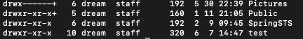

리눅스란 컴퓨터 운영 체제 중의 하나이며, 다중 사용자, 다중 작업(멀티태스킹, 다중 쓰레드)를 지원하는 네크워크 운영체제 입니다.
1991년 핀란드 헬싱키 대학에서 리눅스 토발즈에 의해 개발되었고, 독점되거나 베타되지 않는 프리 소프트웨어 중 하나로 'GNU 프로젝트' 에 따라 쉽게 이용할 수 있게 배포되고 있습니다. 리눅스는
개인용 컴퓨터 부터 슈퍼 컴퓨터는 물론 휴대전화, 스마트 TV 등 임베디드 시스템 까지 광범위하게 이용되고 있습니다.
리눅스 배포판은 리눅스 커널과 GNU 소프트웨어 등으로 구성된 운영체제를 말합니다.
- 리눅스 커널 : 유닉스 계열의 운영 체제의 커널
- 커널 : 운영체제의 핵심 부분으로서, 운영체제의 다른 부분 및 응용프로그램 수행에 필요한 다양한 서비스를 제공합니다.
- GNU 소프트웨어 : GNU 프로젝트를 통해 개발된 유닉스 호환 자유 소프트웨어
Debian 계열
Redhat 계열
Slackware 계열
-
커널
프로그램의 실행 과정에서 가장 핵심적인 연산이 이루어지는 부분으로 코어, 리눅스라고 부른다. 하드웨어를 직접 제어하고, 프로세스 관리, 메모리 관리, 파일 시스템 관리 등을 수행하는 운영체제의 핵심으로,
사용자가 실행시키는 응용프로그램과 하드웨어 사이의 관리자 역할을 수행하며 쉘과 연관되어 명령하는 작업을 수행하고 그 결과를 쉘로 보내는 일을 한다.
-
쉘
쉡은 운영체제에서 사용자가 입력하는 명령을 대신 해석해 커널에게 전달, 실행해주는 프로그램이다. 쉘은 사용자가 입력한 문자열을 해석하고 해당하는 명령어를 찾아서 커널에 작업을 요청하게 됩니다.
- 응용프로그램
리눅스는 각종 프로그래밍 개발 도구, 문서 편집 도구, 네트워크 관련 도구 등 매우 다양한 응용프로그램을 제공한다.
- ls
ls -l : 파일의 상세 정보 표시
ls -a : 숨어있는 파일 표시
ls -t : 파일들이 생성된 시간별로 표시
ls -rt : 파일들이 오래된 시간부터 표시
ls -F : 파일 표시시에 마지막에 유형을 나타내는 파일 명 표시
- cd
cd ~ : 자신이 로그인 해있는 유저의 홈 디렉토리 이동
cd .. : 상위 디렉토리로 이동
cd /folder : 절대 경로의 folder라는 폴더로 이동할 경우 사용한다.
cd - : 이동하기 바로전의 디렉토리로 이동한다.
- touch
touch
touch filename : filename의 파일을 생성합니다.
touch -c filename : filename의 시간을 현재 시간으로 변경합니다.
touch -t 200001011200 filename : filename의 시간을 날짜정보로 변경합니다.
touch -r filename1 filename2 : filename2의 날짜 정보를 filename1의 날짜 정보가 같게 한다.
- mkdir
mkdir foldername : foldername이라는 폴더를 생성합니다.
mkdir -p foldername/subfolder : 존재하지 않는 디렉토리의 하위 디렉토리까지 생성합니다.
mk -m 644 foldername : 특정 권한을 부여한 폴더를 생성합니다.
- cp
cp file cfile : file을 cfile로 복사합니다.
cp -f file cfile : 복사할때 복사할 대상이 있으면 지우고 강제로 복사합니다.
cp -R folder cfolder : 폴더를 복사할 때 사용하며, 폴더 안의 하위 폴더, 파일까지 모두 복사합니다.
# 동일 파일이 있을 경우, 물어보지 않고 경로 Override
yes | cp -arpf /home/tomcat/publish_node/src/* /was/web/src/
- mv
mv fname mfname : fname의 파일을 mfname의 이름으로 이동/변경합니다.
mv -b fname mfnmae : mfname 의 파일이 존재하면 mfname을 백업한 뒤에 이동합니다.
mv -f fname mfname : mfname 의 파일이 존재하면 백업 없이 덮어 씁니다.
- rm
rm fname : fname을 삭제합니다.
rm -f fname : fname을 묻지 않고 삭제합니다.
rm -f folder : folder를 삭제합니다. 하위의 모든 파일도 삭제합니다.
- cat
cat fname : fname의 내용을 출력합니다.
cat fname1 fname2 : fname1과 fname2 의 내용을 이어서 출력합니다.
cat fname1 fname2 | more : fname1 , fname2를 출력하는데 페이지별로 출력합니다.
cat fname1 fname2 | head : fname1 , fname2를 출력하는데 처음부터 10번째까지만 출력합니다.
cat fname1 fname2 | tail : fname1 , fname2를 출력하는데 끝에서부터 10번째까지만 출력합니다.
- redirection
cat fname1 fname2 > fname3 : fname1, fname2 를 출력하고 fname3 이라는 파일에 저장힙니다.
cat fname4 >> fname3 : fname3에 fname4의 내용을 추가합니다.
cat < fname1 : fname1의 내용을 출력합니다.
- alias
alias new = 'command' : comand를 실행하는 새 명령어 new를 만듭니다.
unalias new : new라는 alias를 해제 합니다.
사용자 관리
- useradd {유저명}
- passwd {유저명}
권한
- 읽기 (r) : 파일의 읽기 권한
- 쓰기 (w) : 파일의 쓰기 권한
- 실행 (x) : 파일의 실행 권한
실제 권한 샘플 < 아래 >

drwxr-xr-x 2 dream dream 4096 Apr 22 16:59 user
파일Type 퍼미션정보 링크수 소유자 소유그룹 용량 생성날짜 파일이름
* 파일 Type : "d" -> 디렉토리 , "l" -> 링크파일 , "-" -> 일반파일 등등..
* 퍼미션정보 : 해당 파일에 어떠한 퍼미션이 부여되어있는 지 표시!
* 링크수 : 해당 파일이 링크된 수! 링크는 윈도우의 "바로가기"와 같습니다. "in [대상파일] [링크파일]" 명령으로 링크파일을 만듭니다.
* 소유자 : 해당 파일의 소유자이름! (누구껀지?)
* 소유그룹 : 해당 파일을 소유한 그룹이름! 특별한 변경이 없을 경우 소유자가 속한 그룹이 소유그룹으로 지정됩니다.
* 용량 : 파일의 용량!
* 생성날짜 : 파일이 생성된 날짜!
* 파일이름 : 파일이름이죠!
* 퍼미션의 사용자지정
예) rwxr-xr-x
* 소유자 - rwx : 소유자에 대한 퍼미션지정
* 그룹 - r-x : 소유그룹에 대한 퍼미션지정
* 공개 - r-x : 모든사용자들에 대한 퍼미션지정
* 각 퍼미션 기호를 숫자로 변환 합니다. ( r = 4 , w = 2 , x = 1 )
예) r - x 인 경우 4 0 1
* 변환한 숫자를 합산합니다.
예) 4 0 1 인 경우 4+0+1 = 5
* 위의 샘플과 같이 선언된 퍼미션을 계산해보면,
예) rwxr-xr-x 이면 rwx r-x r-x 세자리씩 끊고, 4+2+1 | 4+0+1 | 4+0+1 숫자변환 뒤 합산하면 "755" 라는 퍼미션값이 나옵니다.
그래서 " chmod 755 conory.text " 명령을 실행하면 conory.text 파일이 755에 해당되는 퍼미션으로 변경됩니다.
그리고 디렉토리도 이 방법으로 퍼미션을 변경할 수 있습니다.
예) " chmod -R 777 conory " conory 디렉토리의 하위에 위치한 모든 파일및 디렉토리 퍼미션이 777로 변경됩니다.
예) chmod -R 755 webccess-apm-agent-v0.1/
소유자 권한
chown [변경할 소유자] [변경할 파일 또는 폴더]
chown -R tomcat:tomcat /was/commWEB --from=root:root
파일 찾기
현재 디렉토리에서, pl 확장자를 가진 모든 파일 찾기
find -name '*.pl'
(현재 디렉토리 밑의 하위 디렉토리까지 다 찾습니다.)
루트에서부터, 즉 전체 하드에서, pl 확장자를 가진 모든 파일 찾기
find / -name '*.pl'
전체 하드 디스크에서, 파일명이 ab 로 시작하는 모든 파일 찾기
find / -name 'ab*'
전체 하드 디스크에서, 파일명이 .bash 로 시작하는 모든 파일 찾기
find / -name '.bash*'
용량체크
du -h --max-depth=1
정렬에 따른 용량 체크
du --max-depth=1 | sort -n
du -sh *
압축하기
# tar를 활용한 gz 압축 하기
tar -zcvf {압축할 파일명}.tar.gz {대상폴더또는파일}
# tar압축하기
tar -cvf wings.tar {대상폴더또는파일}
압축 풀기
# tar gz 압축풀기
tar -xvzf wings.tar.gz
tar -xvzf wings.tar.gz -C 특정 폴더
# tar 압축풀기
tar -xvf [파일명.tar]
특정 포트 찾기
netstat -anp | grep LISTEN | grep :80
리눅스 운영체제 확인
cat /etc/*release*